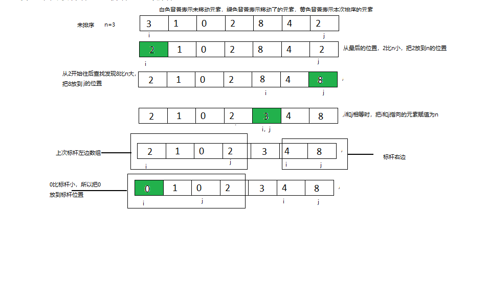

快速排序是一个运用了分治法和递归算法的排序方式。
假如我们现在要排序的数组为[3,1,0,2,8,4,2]。那么在进行快速排序的时候我们先要进行一些准备：
n作为一个数组中的标杆，一趟排序过后我们要把数组中所有大于n的数放在它的右边，所有小于n的放在它的左边。一般情况下我们会取数组第一个元素作为n，在此数组中就是n=3
i我们使用i来找数组中大于标杆的值，i初始指向数组第一个位置
j我们使用j来找数组中小于标杆的值，j初始指向数组最后一个位置
下面开始排序：
先从数组右边开始，我们发现j指向的元素2比标杆n小，那么我们将j指向的元素赋值给i指向的元素，停止操作。此时数组为[2,1,0,2,8,4,2]，i指向第一个位置，j仍指向最后一个。
从数组左边开始，i指向的元素2比标杆小，所以不做操作，使i++，i指向的元素1比标杆小，所以不做操作，使i++，一直到i指向8的时候比标杆大（注意此处如果等于的话也要操作），那么就把i指向的元素赋值给j指向的元素，此时数组为[2,1,0,2,8,4,8]，i指向第五个位置。也就是元素8，j仍然指向最后一个位置。
继续从右边操作，j指向的8不比n小，所以不做操作，j–，4不比3小，不做操作，j–。现在i和j的位置重合了，把n放到这个位置上。我们此轮的操作也就结束了，接下来我们把3所在的位置左边分为一个数组，右边位置分为一个数组再次进行刚才的操作。（此处就是一个递归调用了）
接下来就来看一个图片描述的过程

接下来上代码
1 | public static void quickSort(int[] a, int l, int r) { |
快速排序讲完了。在这里温馨提示大家，学习算法时，我们没必要拘泥于代码的实现，那没有意义。我的建议就是深入理解步骤，当你理解步骤以后代码是随你怎么玩都可以的。